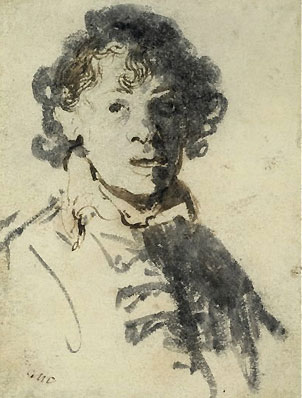
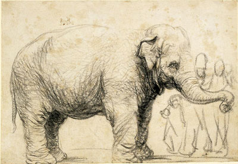

|
Rembrandt
(1606-1669)

Rembrandt van Rijn was born in Leiden, the son of a mill-owner,
and probably grew up in reasonably comfortable circumstances. He
attended the local Latin School and in 1620 was enrolled in the
town's university, but he never seems to have attended courses there
and in 1621 began a three-year apprenticeship with a local painter,
Jacob van Swanenburgh. For about six months, in 1623-4, he pursued
his studies in Amsterdam with Pieter Lastman, who was then the most
highly regarded painter in Holland.
Lastman
had been to Italy and introduced the young Rembrandt to internationally
current trends in history painting (the representation of stories
taken from the Bible, from literature, from antique mythology, or
from history). History painting was considered to be the noblest
form of art, and Rembrandt's ambitions in this direction are clear
from his earliest paintings. These show the influence of Lastman,
but were painted in Leiden, where Rembrandt worked closely with
a fellow Lastman pupil, Jan Lievens (their works can be hard to
distinguish).
Left:
Rembrandt van Rijn, Self-portrait with mouth open, pen and
brown ink and grey wash, around 1628-29
In
1631 Rembrandt settled permanently in Amsterdam, where he was in
considerable demand as a portraitist. He married Saskia van Uylenburgh
in 1634, and purchased a large house (now the Rembrandt House Museum)
in 1639. The Night Watch, a group portrait of one of the
city's militia companies and his most celebrated painting, was completed
in 1642.
Saskia
died in 1642, a year after the birth of their son, Titus. Rembrandt
subsequently formed a relationship with a servant, Geertge Dircx,
which ended in bitterness. By 1649 his affections had turned to
Hendrickje Stoffels, another servant who frequently modelled for
him. She remained his companion until her death in 1663, and bore
a child by him, Cornelia, in 1654.
The
expense of Rembrandt's house, his outlay on various investments
and on works of art for his own collection, brought financial crisis
in the 1650s. In 1656 an inventory of his possessions was drawn
up and over the next two years his assets, including the house,
were made over to the courts and sold. He nevertheless continued
to receive commissions for portraits and history pieces, including
one for the Town Hall which, however, seems never to have been exhibited
there. His son Titus died in 1668 and Rembrandt himself died in
Amsterdam in 1669.
Throughout
his career he attracted students to his workshop, both as trainees
and assistants. Their works can be hard to distinguish from Rembrandt's
own, a task made especially difficult by a general tendency, which
began in the seventeenth century, to attribute any Rembrandtesque
works to the master himself. While agreement now surrounds the attribution
of most of his prints, his drawings and paintings are still subject
to debate. Among his best-known pupils and followers were Gerrit
Dou, Ferdinand Bol, Govert Flinck, Gerbrand van den Eeckhout, Samuel
van Hoogstraten, Nicolaes Maes, Willem Drost and Aert de Gelder.
The latter continued to paint in Rembrandt's late style, which had
become somewhat unfashionable, until the early eighteenth century.
Above: Rembrandt van Rijn, An
Elephant, black chalk and charcoal, around 1637
Rembrandt
experimented in both etching and drypoint, transforming the expressive
possibilities of printmaking. He made some three hundred prints
altogether, of every kind of subject (illustrations, portraits,
landscapes, nudes), and impressions of almost all of them are held
in the British Museum. Where different states of the same print
exist, the collection often includes examples of each one, allowing
a fascinating glimpse into Rembrandt's working methods. A comprehensive
exhibition of the etchings was held at the British Museum in 2001
(see below for catalogue).
The
drawings collection amounts to some eighty sheets, from every period
of the artist's career. They encompass every type of subject and
range from rapid sketches to finished composition drawings, whether
in pen and brown ink with wash applied with the brush, or in chalk.
A few were made as preparatory studies for etchings and paintings,
but in general Rembrandt's drawings are distinct from his activity
as a painter and etcher. They were all exhibited in the British
Museum in 1992, when a full catalogue was published. The Museum
also holds a strong collection of drawings made by his pupils and
followers.
000000000000000000000000000000000
| London |
National
Gallery, London |
| UK |
Art
Gallery and Museum, Glasgow |
| |
Ashmolean
Museum, Oxford |
| |
Burrell
Collection, Glasgow |
| |
Fitzwilliam
Museum, Cambridge |
| |
National
Gallery of Scotland, Edinburgh |
| Austria |
Albertina,
Vienna |
| |
Kunsthistorisches
Museum, Vienna |
| Denmark |
Statens
Museum, Copenhagen |
| France |
Bibliothèque
Nationale de France, Paris |
| |
Institutut
Néerlandais, Paris |
| |
Louvre,
Paris |
| |
Musée
Bonnat, Bayonne |
| |
Musée
du Petit Palais, Paris |
| Germany |
Bayerische
Staatsgemäldesammlungen
Alte Pinakothek, Munich |
| |
Gemäldegalerie,
Dresden |
| |
Kupferstichkabinett,
Berlin |
| |
Kupferstichkabinett,
Dresden |
| |
Gemäldegalerie,
Berlin |
| Netherlands |
Mauritshuis,
The Hague |
| |
Museum
Boijmans Van Beuningen, Rotterdam |
| |
Rijksmuseum,
Amsterdam |
| Sweden |
Nationalmuseum,
Stockholm |
| USA
|
Fogg
Art Museum, Cambridge |
| |
Frick
Collection, New York |
| |
J.
Paul Getty Museum, Los Angeles |
| Metropolitan
Museum of Art, New York |
| |
Museum
of Fine Arts, Boston |
| |
National
Gallery of Art, Washington |
| |
Pierpont
Morgan Library, New York |
Further
Reading
Benesch,
O. The Drawings of Rembrandt. 6 vols. 2nd ed.
Phaidon, 1973
Bevers,
H., Shatborn, P. and Welzel, B. Rembrandt The Master and His
Workshop: Drawings and Etchings. Yale University Press, 1991
Bredius,
A. (revised by H. Gerson). Rembrandt: The Complete Edition of
the Paintings. Phaidon, 1969
Brown,
C., Kelch, J., and van Thiel, P. Rembrandt The Master and His
Workshop: Paintings. Yale University Press, 1991
Bruyn,
J. and Haak, B. et al. A Corpus of Rembrandt Paintings.
Nijhoff 1982 - (in progress)
Hinterding,
E., Luijten, G., Royalton-Kisch, M. Rembrandt the Printmaker.
British Museum Press, 2000 (reprinted 2001)
Royalton-Kisch,
M.. Drawings by Rembrandt and his Circle in the British Museum.
British Museum Press, 1992
Van
de Wetering, E. Rembrandt The Painter at Work. Amsterdam
University Press, 1997
White,
C. and Boon, K. G. Hollstein's Dutch and Flemish Etchings [....]
Vols xviii-xix: Rembrandt van Rijn. Van Gendt, 1969
White,
C. Rembrandt as an Etcher. Yale University Press, 1999
|